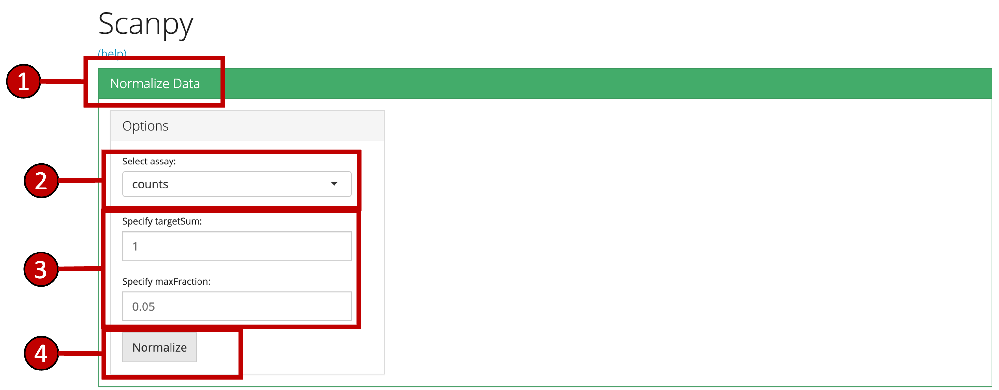
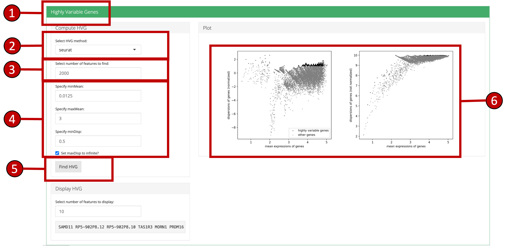
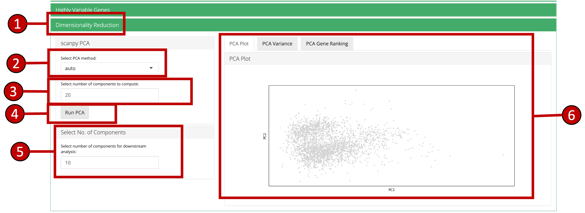
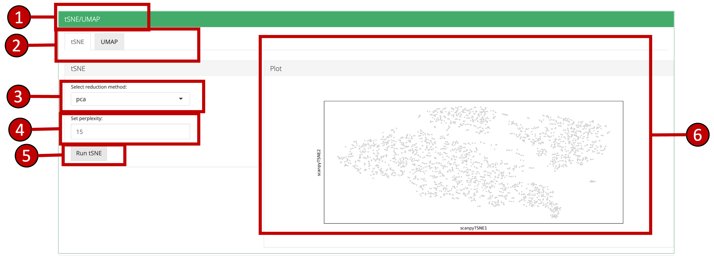
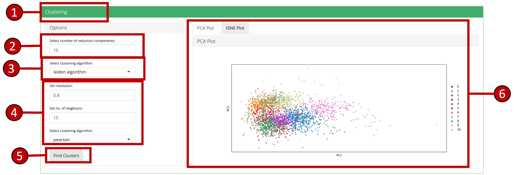
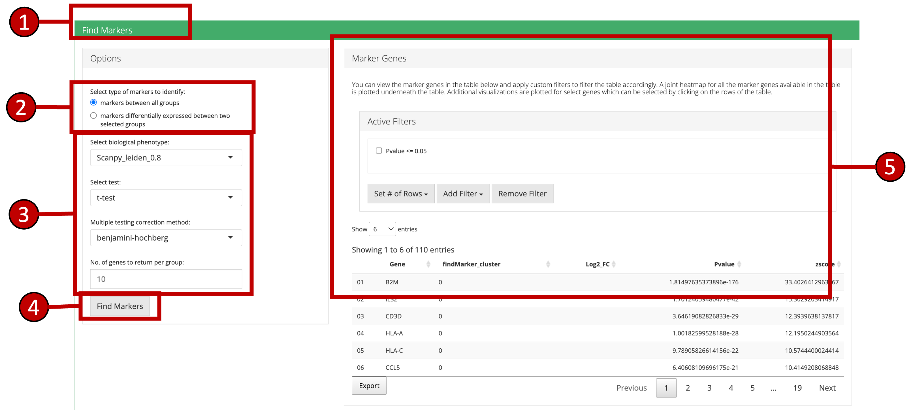
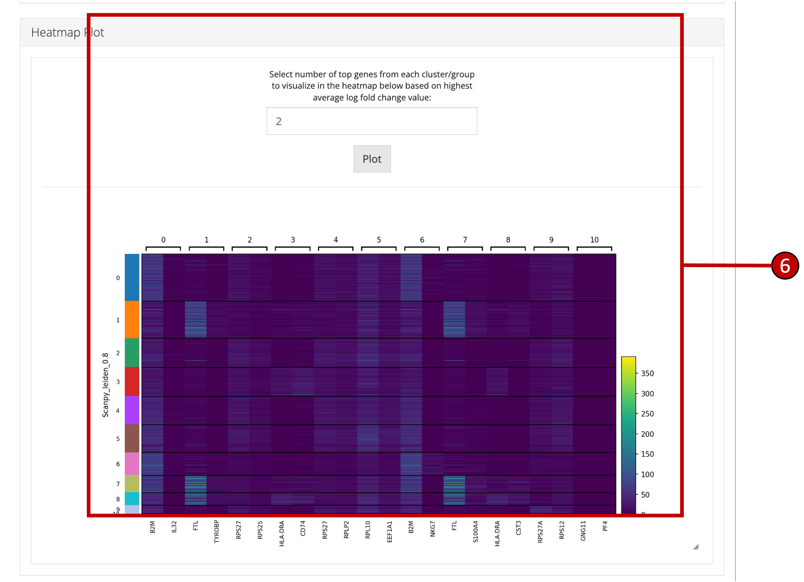

vignettes/articles/scanpy_curated_worklfow.Rmd
scanpy_curated_worklfow.RmdsingleCellTK integrates functions from Scanpy Scanpy is a scalable toolkit for analyzing single-cell gene expression data built jointly with anndata. It includes preprocessing, visualization, clustering, trajectory inference and differential expression testing. The Python-based implementation efficiently deals with datasets of more than one million cells. It is an easy to use streamlined workflow using both the shiny user interface as well as the R console. The shiny application contains a separate tab that lets the users run the steps of the workflow in a sequential manner with ability to visualize through interactive plots from within the application. On the R console, the toolkit offers wrapper functions that use the SingleCellExperiment [1] object as the input and the output. All computations from the wrapper functions are stored within this object for further manipulation.
To view detailed instructions on how to use the workflow, please select ‘Interactive Analysis’ for using the workflow in shiny application or ‘Console Analysis’ for using these methods on R console from the tabs below:
In this tutorial example, we illustrate all the steps of the curated
workflow and focus on the options available to manipulate and customize
the steps of the workflow as per user requirements. To initiate the
Scanpy workflow, click on the ‘Curated Workflows’ from the
top menu and select Scanpy:
NOTE: This tutorial assumes that the data has already been uploaded via the upload tab of the toolkit and filtered before using the workflow.
1. Normalize Data
Assuming that the data has
been uploaded via the Upload tab of the toolkit, the first step for the
analysis of the data is the Normalization of data. For this purpose, any
assay available in the uploaded data can be used.
assay to normalize from the dropdown
menu.
2. Highly Variable Genes
Identification of the
highly variable genes is core to the Scanpy workflow and
these highly variable genes are used throughout the remaining workflow.
Scanpy provides three methods for variable genes
identification i.e. seurat, cell_ranger and
seurat_v3.
seurat, cell_ranger and
seurat_v3.2000.
3. Dimensionality Reduction Scanpy
workflow offers PCA for dimensionality reduction and the
components from the method can be used in the downstream analysis.
Moreover, several plots are available for the user to inspect the output
of the dimensionality reduction such as the standard ‘PCA Plot’, ‘PCA
Gene Ranking’ and ‘PCA Variance’.

4. tSNE/UMAP
‘tSNE’ and ‘UMAP’ can be computed
and plotted once components are available from ‘Dimensionality
Reduction’ tab.

5. Clustering
Cluster labels can be generated
for all cells/samples using one of the computed reduction method. Plots
are automatically re-computed with cluster labels. The available methods
for clustering as provided by Scanpy include
louvain and leiden.
louvain and
leiden.
6. Find Markers
‘Find Markers’ tab can be used
to identify and visualize the marker genes using on of the provided
visualization methods. The tab offers identification of markers between
two selected phenotype groups or between all groups and can be decided
at the time of the computation. Furthermore, markers that are conserved
between two phenotype groups can also be identified. Visualizations such
as Dot Plot, Violin Plot, Matrix Plot and Heatmap Plot can be used to
visualize the individual marker genes.


7. Downstream Analysis
Once all steps of the
Scanpy workflow are completed, users can further analyze the data by
directly going to the various downstream analysis options (Differential
Expression, Marker Selection & Pathway Analysis) from within the
Scanpy workflow.
All methods provided by SCTK for Scanpy workflow use a
SingleCellExperiment object both as an input and
output.
Using a sample dataset:
library(singleCellTK)
sce <- importExampleData('pbmc3k')
print(sce)## class: SingleCellExperiment
## dim: 32738 2700
## metadata(0):
## assays(1): counts
## rownames(32738): MIR1302-10 FAM138A ... AC002321.2 AC002321.1
## rowData names(3): ENSEMBL_ID Symbol_TENx Symbol
## colnames(2700): pbmc3k_AAACATACAACCAC-1 pbmc3k_AAACATTGAGCTAC-1 ...
## pbmc3k_TTTGCATGAGAGGC-1 pbmc3k_TTTGCATGCCTCAC-1
## colData names(12): Sample Barcode ... Date_published sample
## reducedDimNames(0):
## mainExpName: NULL
## altExpNames(0):1. Normalize Data
Once raw data is uploaded and
stored in a SingleCellExperiment object,
runScanpyNormalizeData() function can be used to normalize
the data. The method returns a SingleCellExperiment object
with normalized data stored as a new assay in the input object.
Parameters to this function include useAssay (specify
the assay that should be normalized), normAssayName
(specify the new name of the normalized assay, defaults to
"scanpyNormData"), targetSum (defaults to
1) and maxFraction (defaults to
0.05).
sce <- runScanpyNormalizeData(inSCE = sce, useAssay = "counts", normAssayName = "scanpyNormData")2. Scale Data
Normalized data can be scaled by
using the runScanpyScaleData() function that takes input a
SingleCellExperiment object that has been normalized
previously by the runScanpyNormalizeData() function. Scaled
assay is stored back in the input object.
Parameters include useAssay (specify the name of
normalized assay) and scaledAssayName (specify the new name
for scaled assay, defaults to "scanpyScaledData").
sce <- runScanpyScaleData(inSCE = sce, useAssay = "scanpyNormData", scaledAssayName = "scanpyScaledData")3. Highly Variable Genes
Highly variable genes
can be identified by first using the runScanpyFindHVG()
function that computes that statistics against a selected HVG method in
the rowData of input object. The variable genes can be visualized using
the plotScanpyHVG() method.
Parameters for runScanpyFindHVG() include
useAssay (specify the name of the log normalized assay,
defaults to "scanpyNormData") and method()
(specify the method to use for variable genes computation, defaults to
"seurat"). The getTopHVG function can be used
to select the top most variable genes and store it back in the SCE as an
altExp
sce <- runScanpyFindHVG(inSCE = sce, useAssay = "scanpyNormData", method = "seurat", minMean = 0.0125, maxMean = 3, maxDisp = 0.5)
print(getTopHVG(sce, method = "seurat", hvgNumber = 10))## [1] "PPBP" "FCRL2" "CEP128" "DOK3" "NFE2L2"
## [6] "YPEL2" "ARVCF" "UBE2D4" "FAM210B" "CTB-113I20.2"
plotScanpyHVG(sce)4. Dimensionality Reduction
PCA can be computed
using the runScanpyPCA() function. Plots can be visualized
using plotScanpyPCA(),
plotScanpyPCAGeneRanking() and
plotScanpyPCAVariance().
sce <- runScanpyPCA(inSCE = sce, useAssay = "scanpyScaledData", reducedDimName = "scanpyPCA", nPCs = 20, method = "auto", use_highly_variable = TRUE)
plotScanpyPCA(inSCE = sce, reducedDimName = "scanpyPCA")
plotScanpyPCAGeneRanking(inSCE = sce)
plotScanpyPCAVariance(inSCE = sce, nPCs = 20)5. tSNE/UMAP runScanpyTSNE() and
runScanpyUMAP() can be used to compute tSNE/UMAP statistics
and store into the input object. Parameters to both functions include
inSCE (input SCE object), useReducedDim
(specify the reduction to use i.e. "pca"),
reducedDimName (name of this new reduction) and
dims (number of dims to use).
plotScanpyEmbedding() can be used to visualize the
results.
sce <- runScanpyTSNE(inSCE = sce, useReducedDim = "scanpyPCA", reducedDimName = "scanpyTSNE")
sce <- runScanpyUMAP(inSCE = sce, useReducedDim = "scanpyPCA", reducedDimName = "scanpyUMAP")
plotScanpyEmbedding(sce, reducedDimName = "scanpyTSNE")
plotScanpyEmbedding(sce, reducedDimName = "scanpyUMAP")6. Clustering runScanpyFindClusters() function can be used to compute the
clusters, which can later be plotted through the
plotScanpyEmbedding() method with cluster labels. The
parameters to the function include inSCE (input SCE
object), useAssay (name of the scaled assay),
useReducedDim (specify which reduction to use
i.e. "scanpyPCA"), dims (number of dims to
use) and the method (either "louvain" or
"leiden").
sce <- runScanpyFindClusters(inSCE = sce, useAssay = "scanpyScaledData", useReducedDim = "scanpyPCA", method = "leiden", resolution = 0.8, nNeighbors = 15, dims = 10, cor_method = "pearson")plotScanpyEmbedding() can then be used to plot all
reductions previously computed with cluster labels:
plotScanpyEmbedding(sce, reducedDimName = "scanpyPCA", color = 'Scanpy_leiden_0.8')
plotScanpyEmbedding(sce, reducedDimName = "scanpyTSNE", color = 'Scanpy_leiden_0.8')
plotScanpyEmbedding(sce, reducedDimName = "scanpyUMAP", color = 'Scanpy_leiden_0.8')7. Find Markers
Marker genes can be identified
using the runScanpyFindMarkers() function. This function
can use one specified column from colData of the input
object from which the user can select the groups versus which marker
genes need to be obtained. User can either compare all group of cells
versus the rest or can can manually specify the cells included in one
group vs cells included in the second group (group1 and
group2 parameter).
sce <- runScanpyFindMarkers(inSCE = sce, colDataName = "Scanpy_leiden_0.8", nGenes = 10, test = "t-test", corr_method = "benjamini-hochberg")
print(head(metadata(sce)[["scanpyMarkersTable"]]))## Gene findMarker_cluster Log2_FC Pvalue zscore
## 01 RPS27 0 0.7101832 1.169946e-125 28.92589
## 02 RPS12 0 0.7652162 1.675553e-100 25.67202
## 03 RPS25 0 0.7343966 7.038085e-91 23.83379
## 04 RPL32 0 0.6419957 3.152299e-86 23.30648
## 05 RPS6 0 0.6920167 1.457690e-86 23.08136
## 06 EEF1A1 0 0.5713664 6.820436e-87 23.05413The marker genes identified can be visualized through one of the
available plots from matrix plot, violin plot,
dot plot and heatmap plot.
plotScanpyMarkerGenes(sce, groups = '0')
plotScanpyMarkerGenesViolin(sce, groups = '0')
plotScanpyMarkerGenesHeatmap(sce, groupBy = 'Scanpy_leiden_0.8', nGenes = 10)
#plotScanpyMarkerGenesDotPlot(sce, groupBy = 'Scanpy_leiden_0.8', nGenes = 10)
#plotScanpyMarkerGenesMatrixPlot(sce, groupBy = 'Scanpy_leiden_0.8', nGenes = 10)